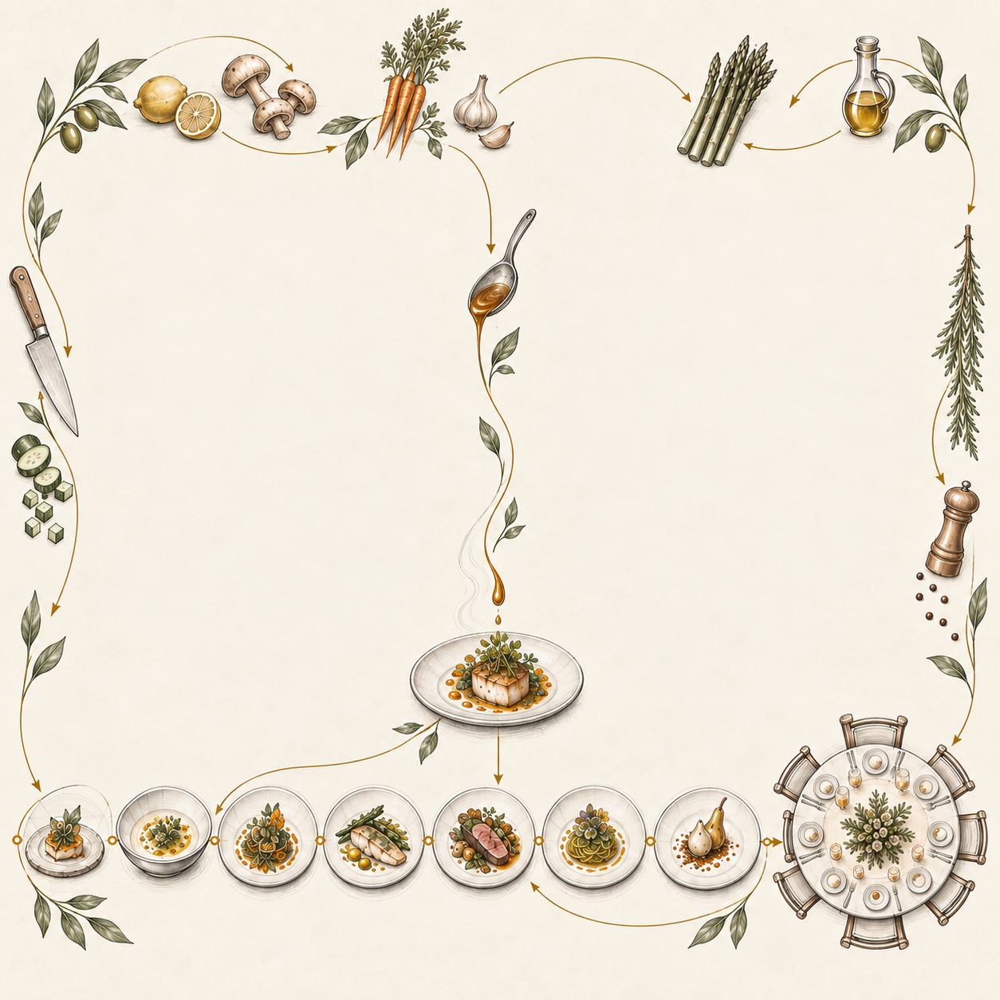
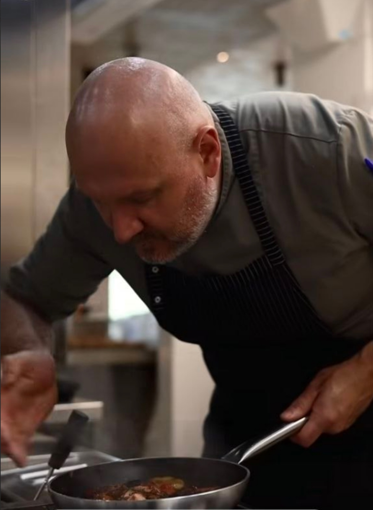
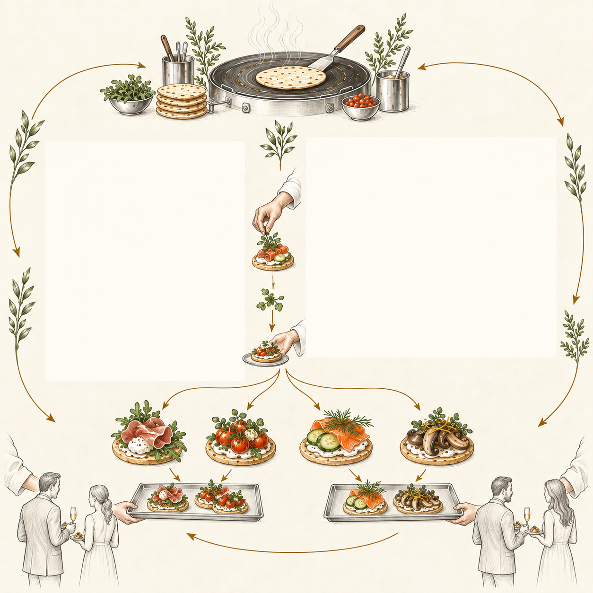
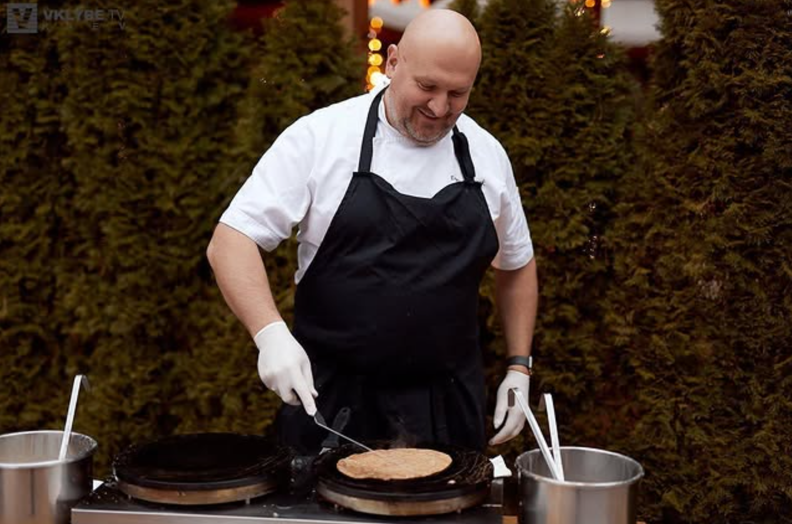
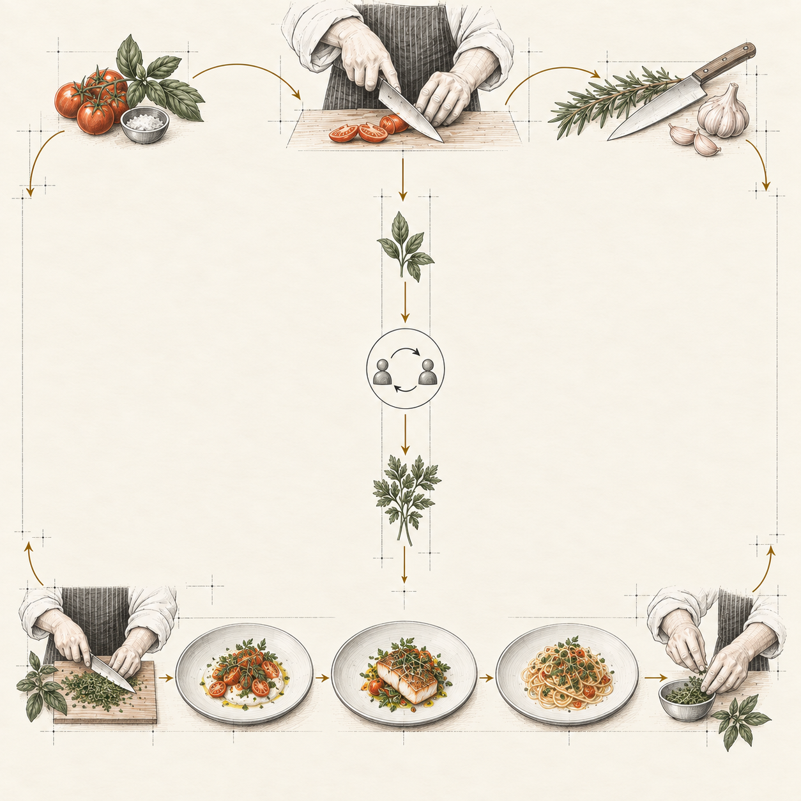
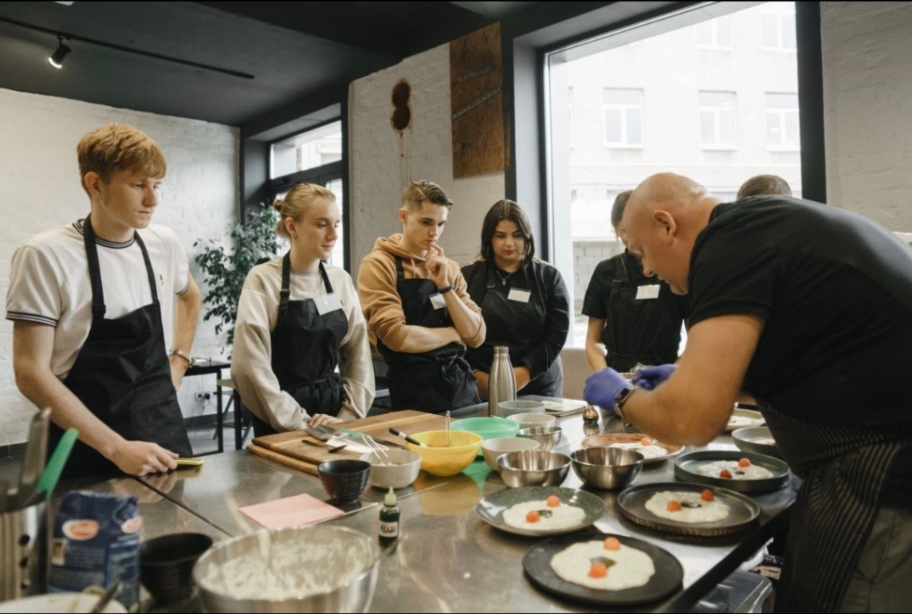

Макет v2 · меньше деталей · крупнее фото · сайт не изменён

01
Частный ужин
Я приготовлю любимые блюда для близких или создам гастрономический маршрут в семь подач.


02
Приватные мероприятия
Я соберу свободный формат с небольшими закусками и блюдами, которые удобно есть за разговором.



03
Мастер-классы
Я покажу гостям профессиональные приёмы, мы вместе приготовим блюда, а затем сядем за общий стол.